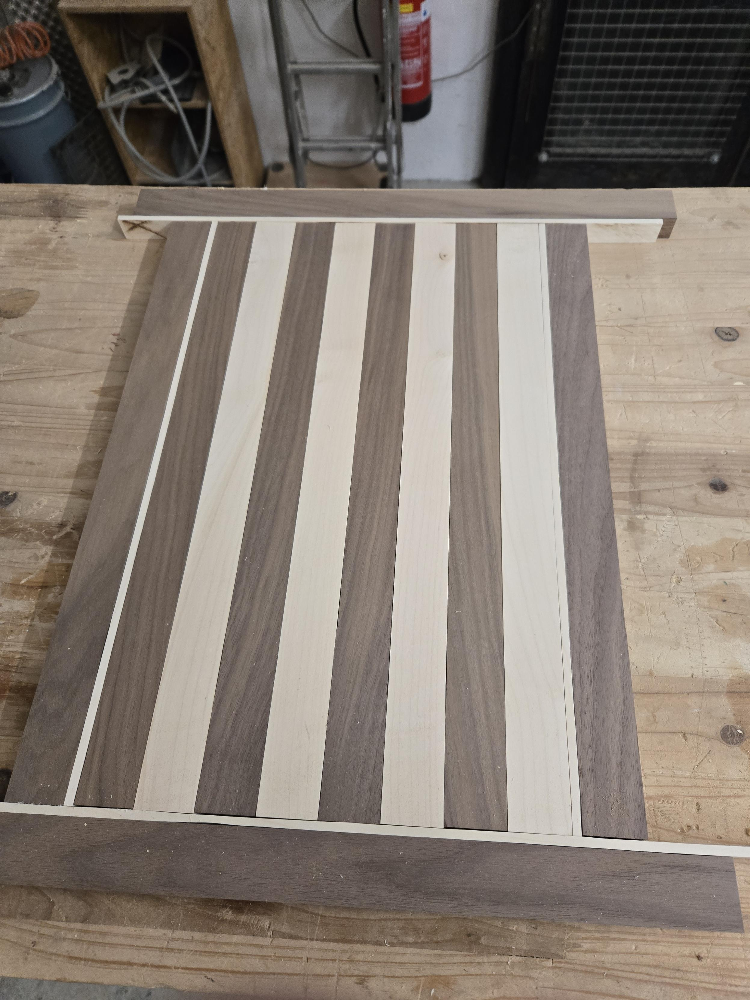
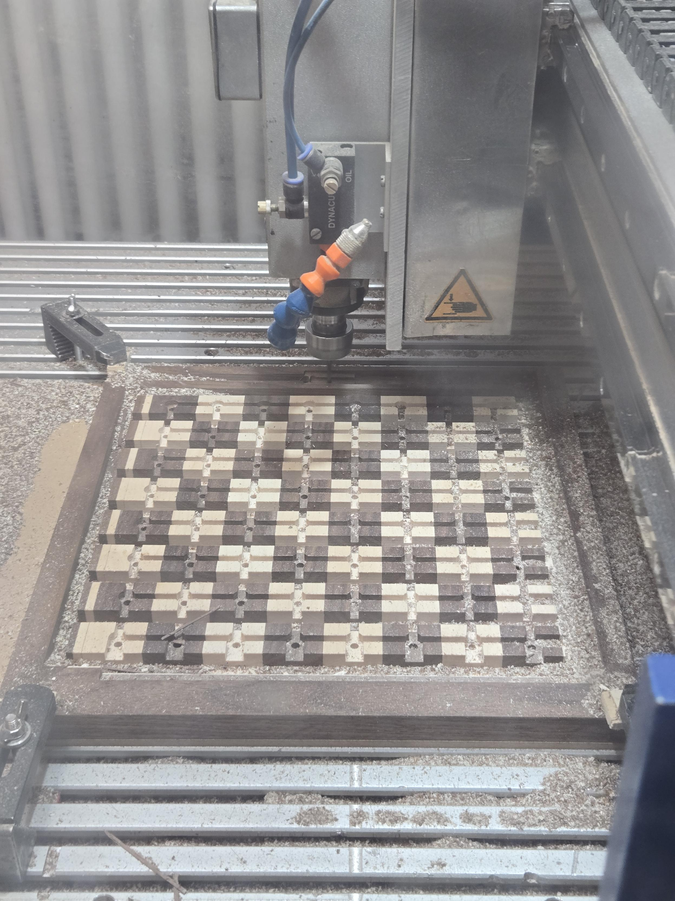
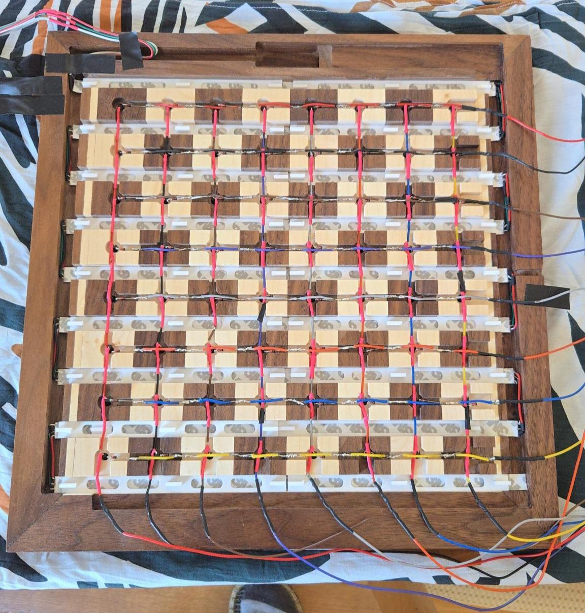
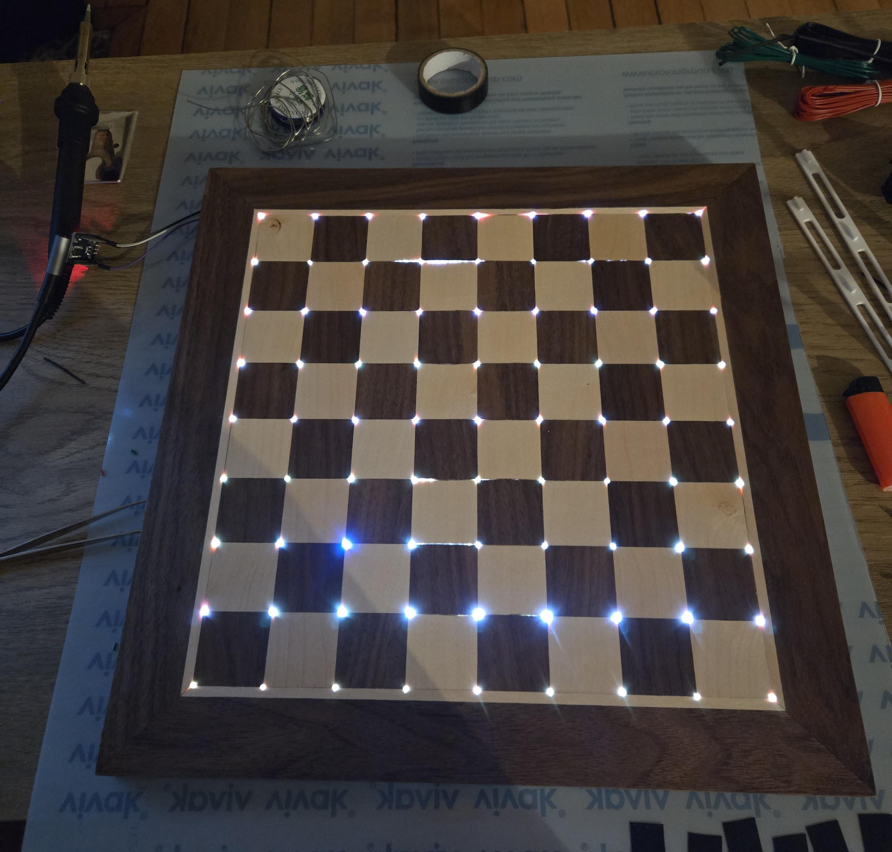

Electronic Chessboard
2026
Built from scratch with a friend during a 10-day hands-on workshop. The project covered wood assembly, CNC machining, reed switch wiring, and ESP32-based embedded control for a working chessboard prototype.
Everything was made from raw materials, from ordering the wood and electronic components beforehand to planning the assembly process over a week while learning new tools. The prototype board isn't a perfect square, but if we don't tell you, you wouldn't notice, I think...
Final assembly was less expensive than a tournament electronic board (not including labor).
Features
- Custom wooden frame creation following standard chessboard measurements
- CNC machined for cable routing & electronic components
- 8x8 reed switch matrix for magnet-embedded pieces
- ESP32 firmware with real-time piece tracking
- Working prototype with LED indicators tracking piece movements
- Simple plug-and-play setup, can then connect via bluetooth
Project photos




Tech stack
A mix of custom fabrication and embedded systems with an emphasis on learning by doing.
Results
Deep hands-on learning in woodworking, hardware, electronics, and embedded systems. No software features were added as the goal was to create a functional physical prototype.
Working chessboard prototype achieved. You can play normal chess and follow piece movements.